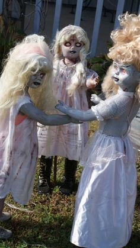
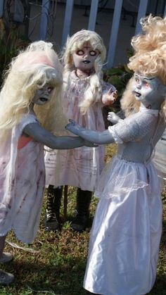

On Halloween night, three friends—Ava, Max, and Lily—found the old shop at the end of a forgotten street. Inside, three costumes waited on rusted hooks: a cracked porcelain doll mask, a moth-eaten black cloak, and a grinning jester suit with bells that jangled in the silence. A small sign above them read, "Wear if you dare." Laughing off the chill in the air, they each picked a costume. Ava slipped on the porcelain mask, feeling it press cold against her skin. Max threw on the cloak, which felt heavy as lead, settling around him like a shroud. Lily donned the jester suit, the bells ringing softly, almost as if whispering secrets in her ear. But as soon as they finished putting them on, a terrible silence fell over the shop. Ava tried to pull the mask off, but it wouldn’t budge. Instead, it seemed to sink into her skin, pressing tighter until she could barely breathe. She felt her vision go dark, her hands clawing at her face, and then—she was somewhere else. She saw flashes of a life not her own, of a girl who’d vanished years ago, trapped forever in the mask. Max stumbled, his body feeling impossibly heavy. His hands were cold and numb, and when he looked down, he saw his own skin turning gray, veins blackening, his vision blurring until he could only see shadows. He heard faint voices around him, whispers of those who wore the cloak before, each one trapped, each one still there, waiting for someone new. Lily tried to scream, but her lips were stretched into a twisted grin she couldn’t control. Her limbs jerked on their own, her feet moving in a nightmarish dance. She could feel something laughing inside her, something ancient and dark, forcing her to dance faster and faster as the bells on her suit jingled louder, echoing in her mind. Just as they felt their minds slipping away, the shop door creaked open. A new group of curious faces peered inside, looking at the strange costumes hanging on hooks: a cracked doll mask, a heavy black cloak, and a jester suit with bells that jingled faintly. And from somewhere deep inside each costume, three silent voices whispered, "Come wear us... we’re waiting."
 
